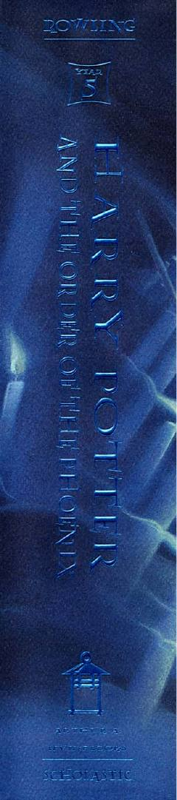

5HGarri Potter Fenikslar ordeni bilan Voldemortga qarshi kurashadi.
Bu kitob Garri Potter sehrli dunyo romanlar seriyasining beshinchi qismi bo'lib, Garri Potter va uning do'stlarining Fenikslar ordeni bilan birgalikda Voldemortga qarshi kurashini tasvirlaydi. Garri Privet Drive ko'chasida yozgi ta'tilni o'tkazayotganda sirli va xavfli voqealar yuz bera boshlaydi. J.K. Rowling tomonidan yozilgan bu asar 2003-yilda Bloomsbury nashriyotida birinchi marta chop etilgan.